[PREENCHER]
[PREENCHER: entrega real da Youp no projeto]
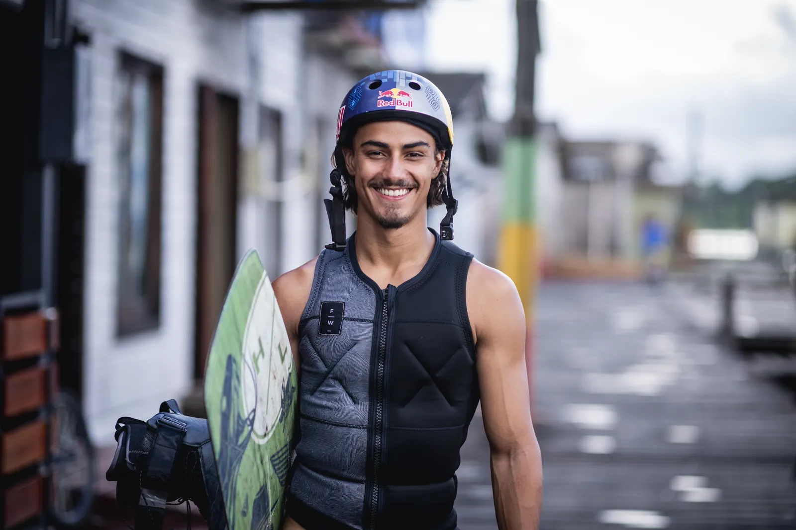
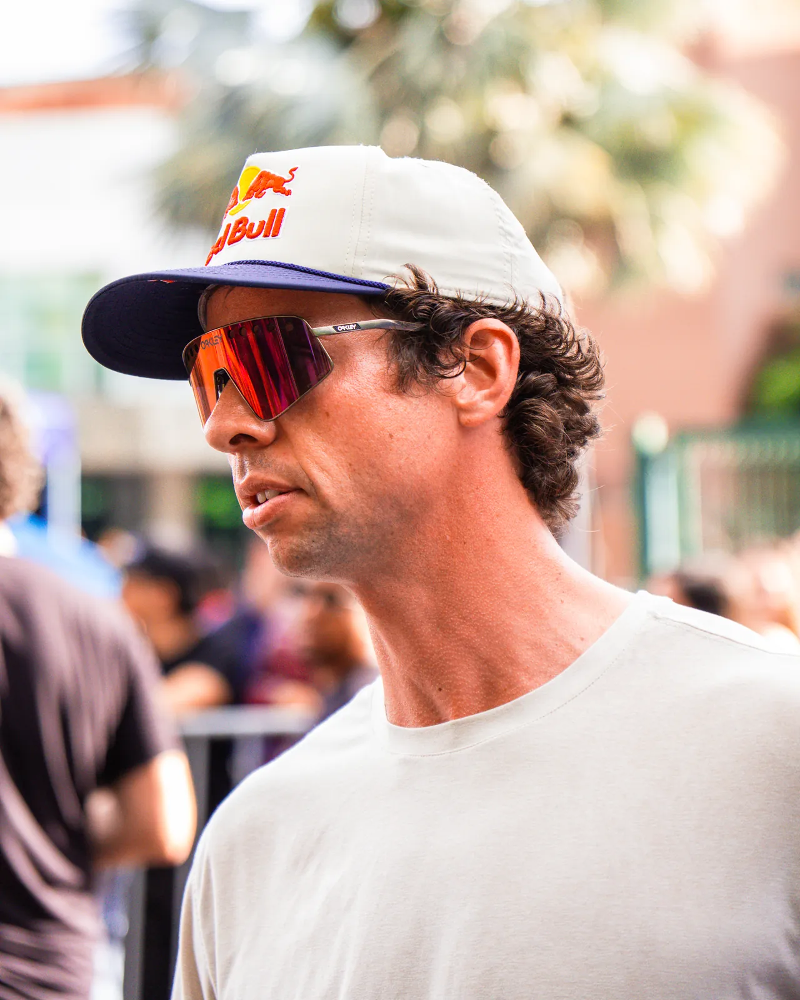
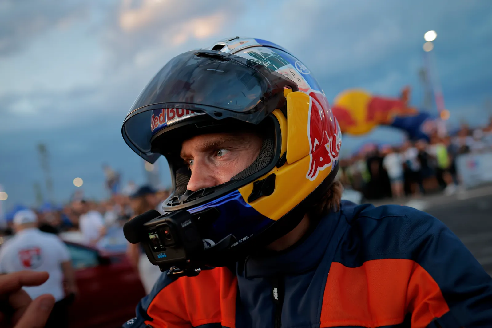
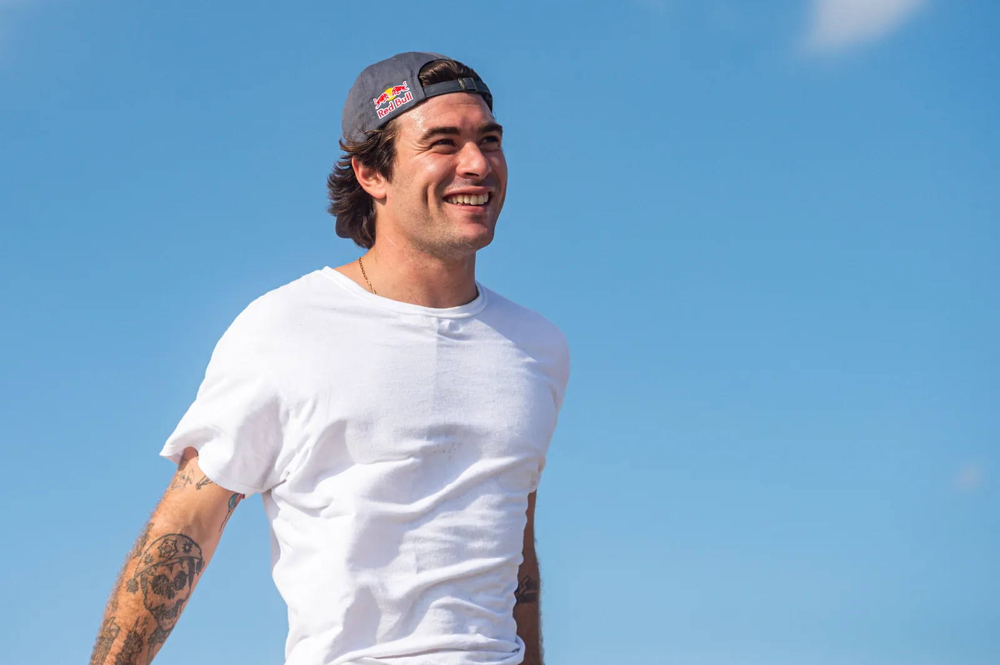
A gente vive o esporte no grau máximo.
A YOUP é o braço direito de atletas dentro da Red Bull Brasil.
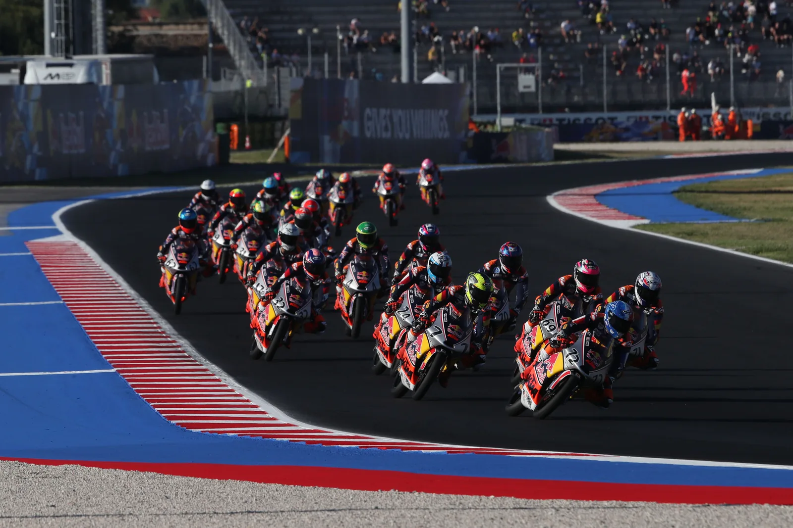
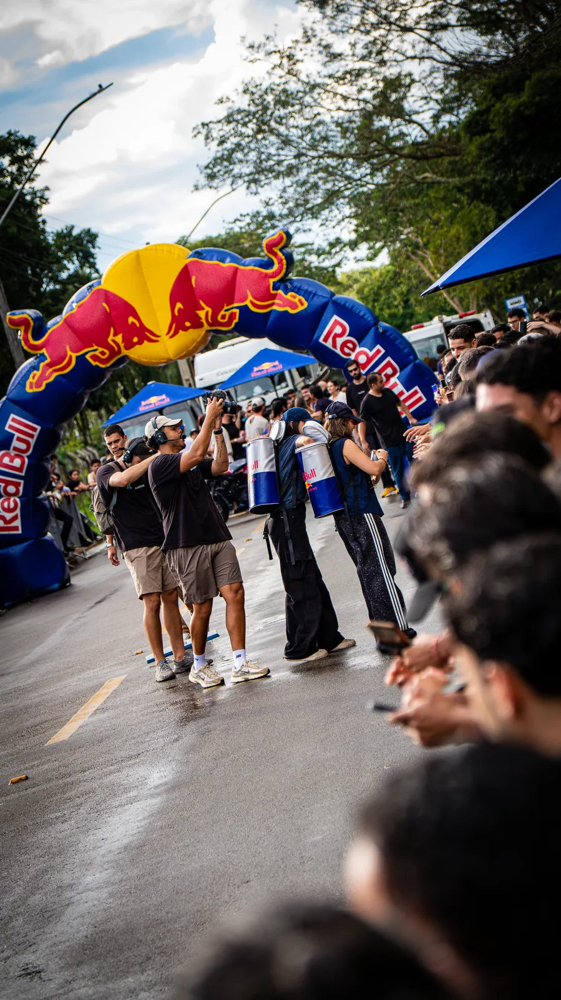
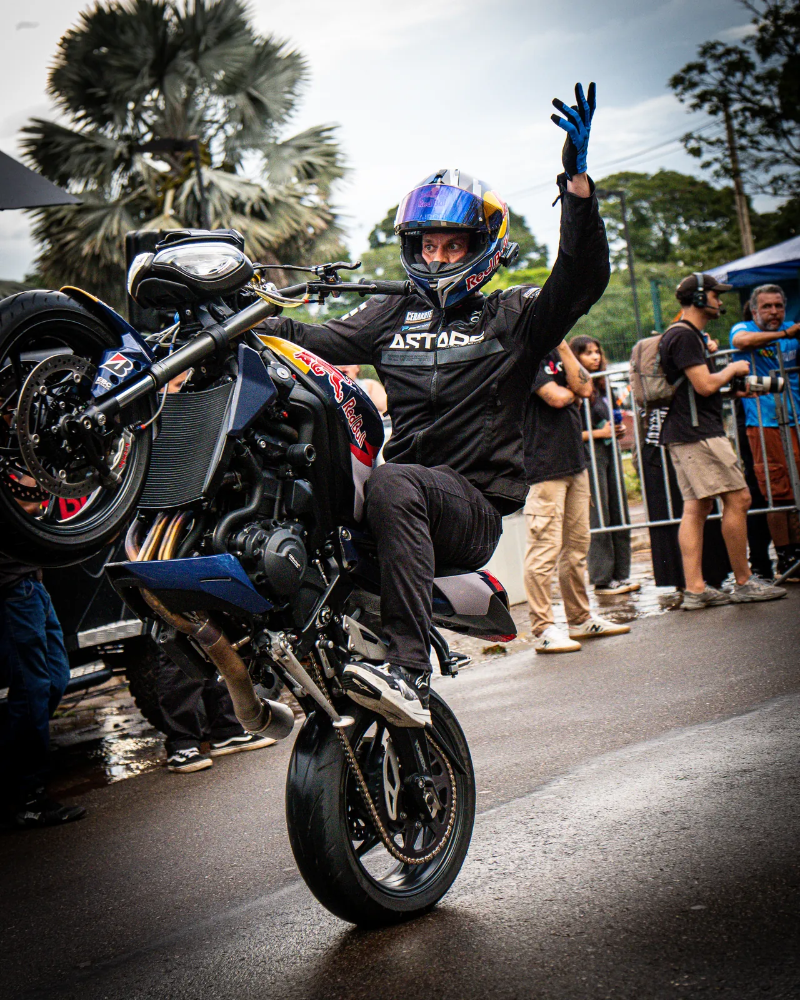
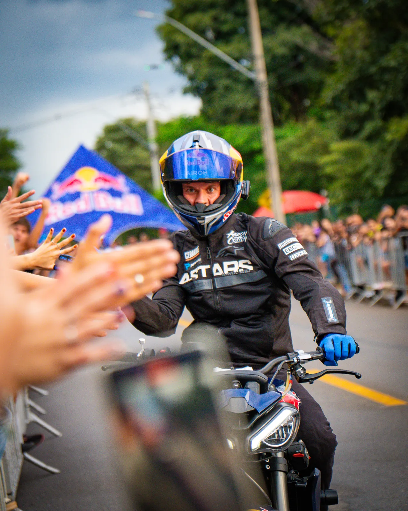
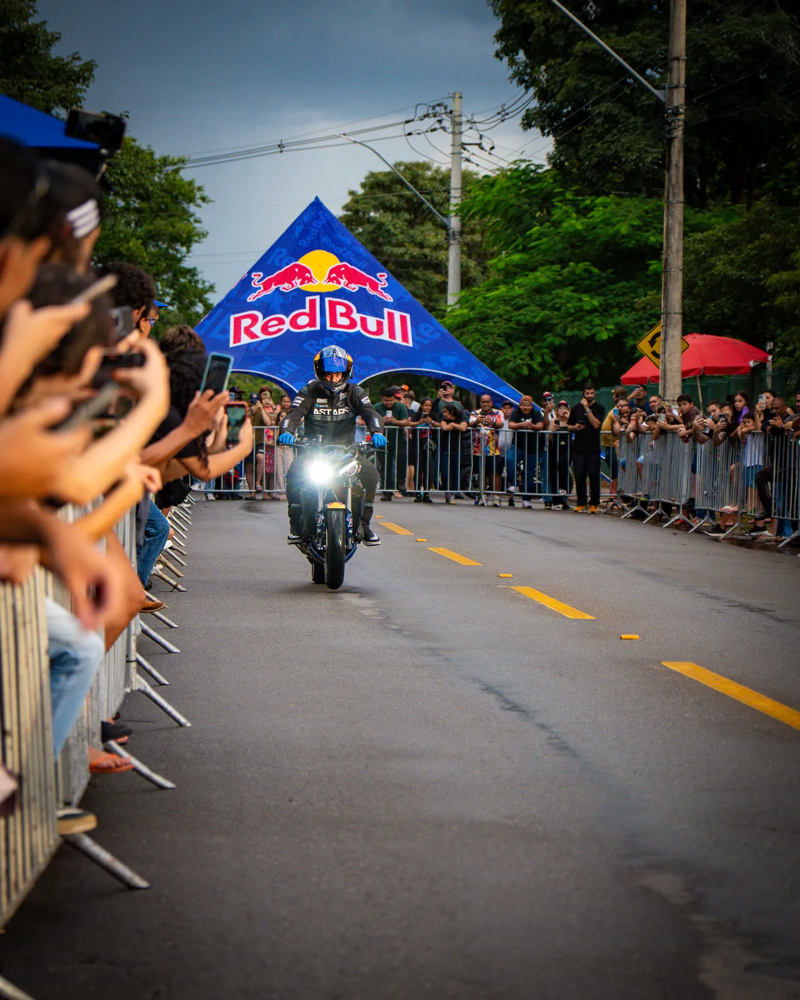
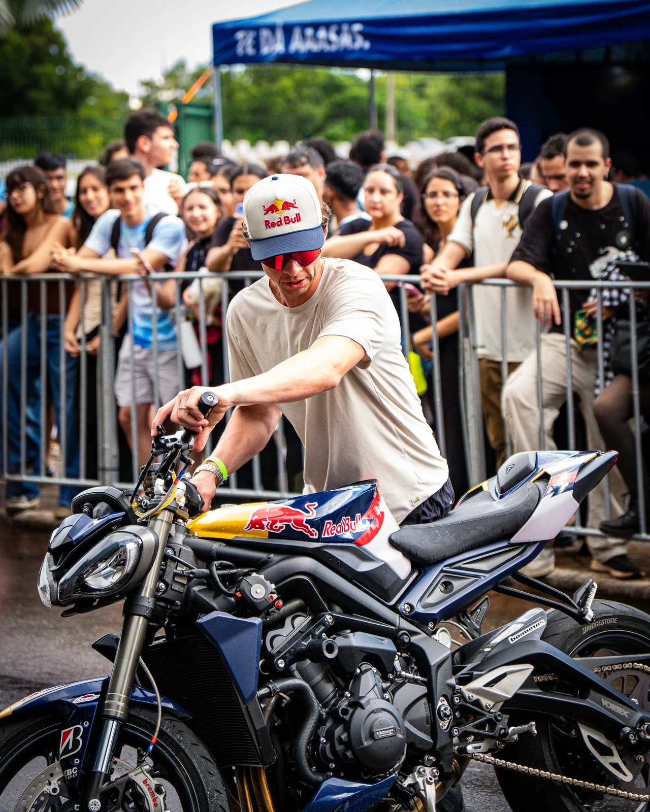
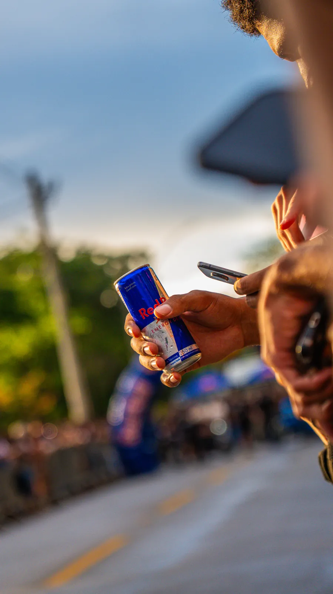
Fotos: [NOME DO FOTÓGRAFO]
[PREENCHER: entrega real da Youp no projeto]
[PREENCHER: entrega real da Youp no projeto]
[PREENCHER: entrega real da Youp no projeto]
[PREENCHER: entrega real da Youp no projeto]
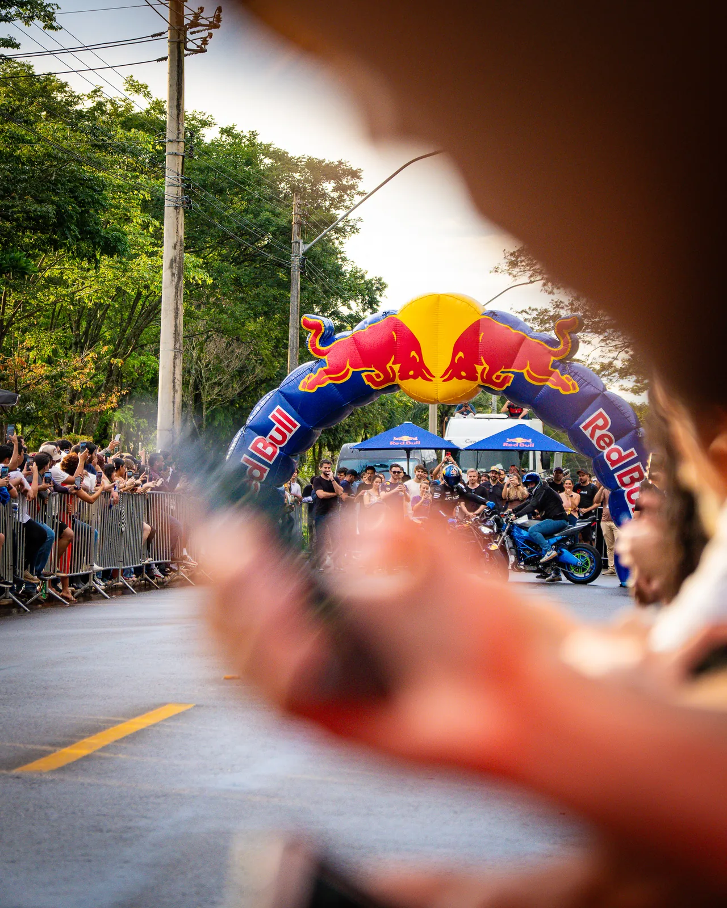